MORSE
Robotics simulation with Blender and Python
MORSE: Blender
Blender is a professional, open source 3D modeling, rendering and animation software.
MORSE: Blender Game Engine
MORSE: Blender Game Engine
The BGE comes with Bullet, a powerful physics engine
MORSE: components
Environments
The environment is a Blender scene of the environment we want our tobots to evolve in.
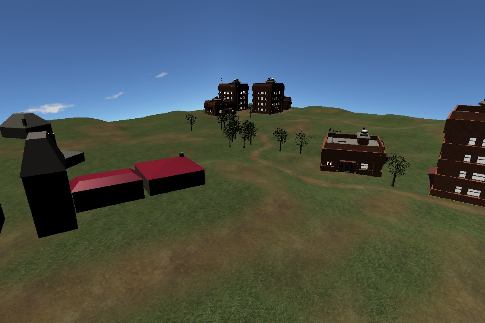MORSE: components
Environments
The environment is a Blender scene of the environment we want our tobots to evolve in.
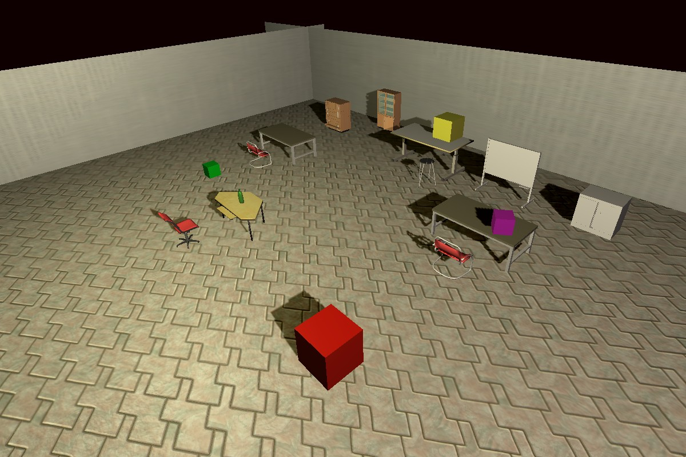MORSE: components
Environments
The environment is a Blender scene of the environment we want our tobots to evolve in.
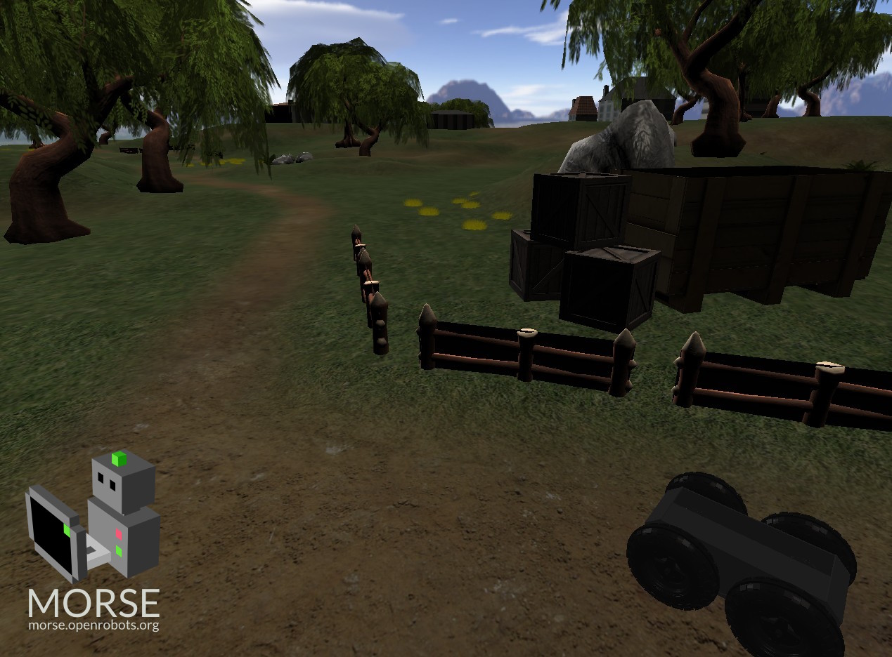MORSE: components
Robots
A robot is a 3D model with some physical properties
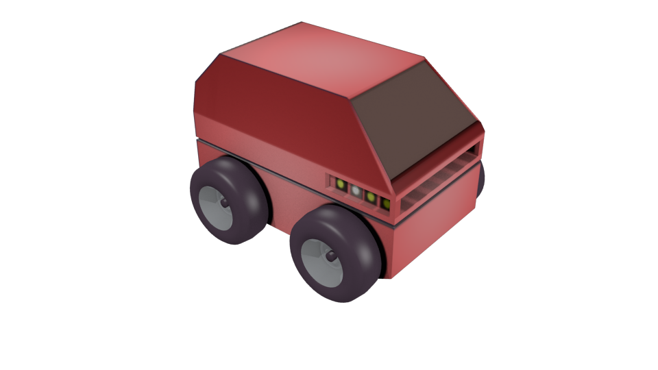MORSE: components
Robots
A robot is a 3D model with some physical properties
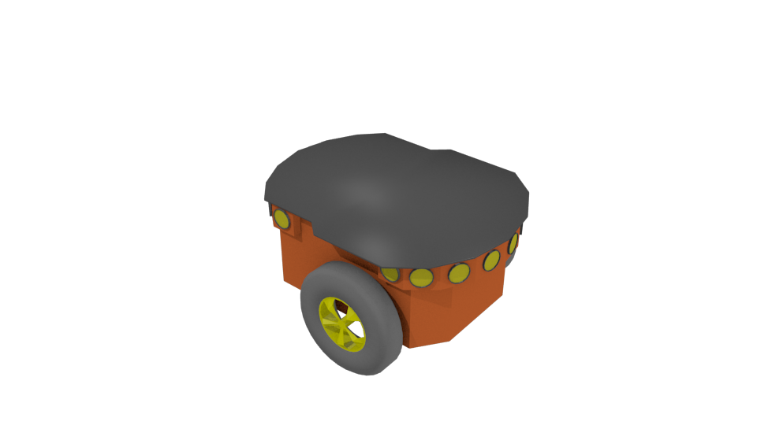MORSE: components
Robots
A robot is a 3D model with some physical properties

MORSE: components
Actuators
An actuator takes some inputs from the outside world (via a middleware :ros, moos, sockets...) and changes the behavior of the robot (modify its speed, its orientation...)
MORSE: components
Sensors
A sensor gather data from the simulated world (distances, position, speed...) and communicate it to the outside world using a middleware
MORSE: components
Sensors
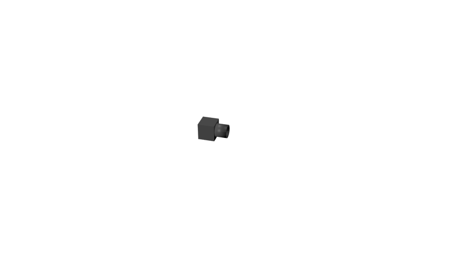MORSE: components
Sensors
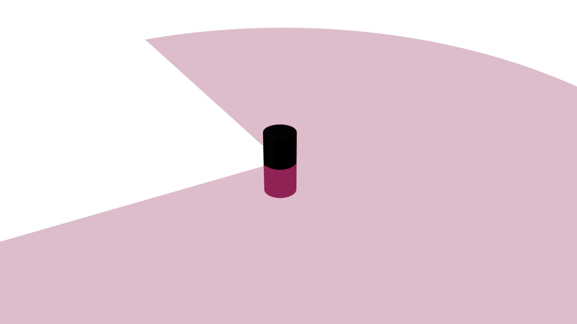Anatomy of a MORSE simulation
Creating a simulation workspace
:~$ morse create flocking
Anatomy of a MORSE simulation
Creating a simulation workspace
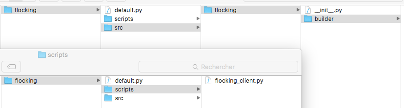Anatomy of a MORSE simulation
The builder script 1/3
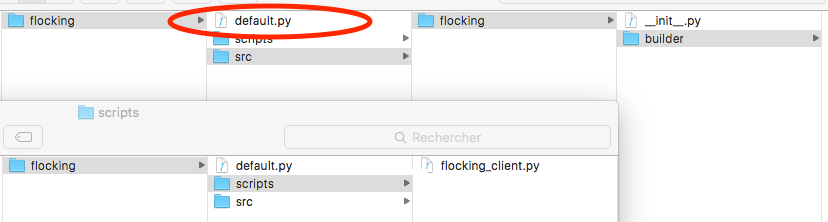Anatomy of a MORSE simulation
The builder script 2/3
The root of the simulation folder contains a default.py script that describes, in python, the scene to be simulated.
from morse.builder import *
robot = Morsy() # This is a robot
robot.translate(1.0, 0.0, 0.0) # Placed in x=1,y=0,z=0
motion = MotionVW() # This is an actuator, to act on the robot
robot.append(motion) # The actuator has to be attached to the robot
# ...
Anatomy of a MORSE simulation
The builder script 3/3
# ...
pose = Pose() # This is a sensor, it senses
# the position of the robot
robot.append(pose)
robot.add_default_interface('socket') # Here we will interact
# with MORSE through sockets
# but we could also use Moos, ROS, Yarp...
# This is the model of the environment
env = Environment('sandbox', fastmode = False)
env.set_camera_location([10.0, -10.0, 10.0])
env.set_camera_rotation([1.05, 0, 0.78])
Anatomy of a MORSE simulation
Launching the simulation
:~$ morse run flocking
Anatomy of a MORSE simulation
Launching the simulation
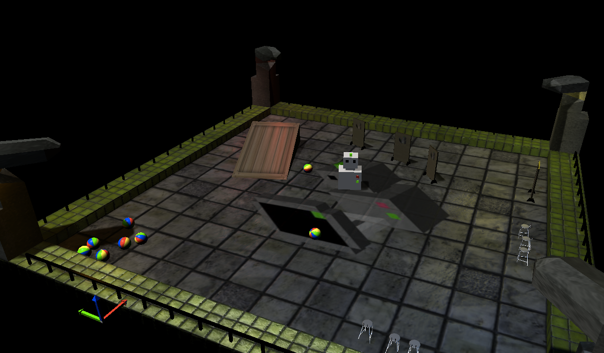Anatomy of a MORSE simulation
The simulation folder is self contained. To use it on an other computer, just run:
:~$ morse import /path/to/simu/folder simu-name
Anatomy of a MORSE simulation
Creating your own robot 1/2
To add a robot in your simulation, you can use the following tool:
:~$ morse add robot car flocking
Anatomy of a MORSE simulation
Creating your own robot 2/2
We are going to use a pre-made robot during this course, we won't make a custom one. For more information about creating your own robot, refer to [1],[2]
Anatomy of a MORSE simulation
Creating your own actuator 1/2
:~$ morse add actuator carActuator flocking
Anatomy of a MORSE simulation
Creating your own actuator 2/2
We are going to use off the shelf actuators, for building a custom actuator, please refer to [1],[2]
Anatomy of a MORSE simulation
Creating your own sensor 1/7
:~$ morse add sensor flockingSensor flocking
This sensor will give the state of the current robot and the states of all the robots in the scene
Anatomy of a MORSE simulation
Creating your own sensor 2/7
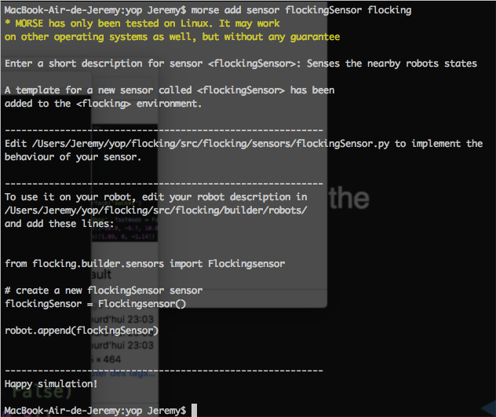Anatomy of a MORSE simulation
Creating your own sensor 3/7
A script is created that corresponds to our sensor implementation:
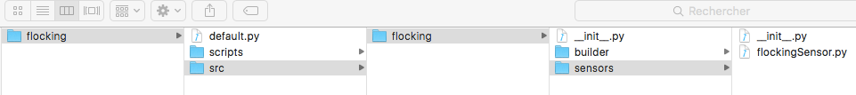Anatomy of a MORSE simulation
Creating your own sensor 4/7
It mainly consist of two parts:
- The description of the data exported by this sensor
- The method called regularily to gather the data
Anatomy of a MORSE simulation
Creating your own sensor 5/7
First, we define the variables that will be exported to the outside world:
add_data('state', [], "list",
'The state vector of the robot that carries this sensor: x,y,theta')
add_data('states', [], "list",
'The state vectors of the surrounding robots: [(x1,y1,theta1)...]')
Anatomy of a MORSE simulation
Creating your own sensor 6/7
The default_action is where the logic of the sensor goes
def default_action(self):
robot = self.robot_parent.bge_object
# Store the state vector of the carrier robot
self.local_data['state'] = [self.position_3d.x,\
self.position_3d.y,self.position_3d.yaw]
self.local_data['states'] = []
for obj in blenderapi.scene().objects:
try:
obj["Robot_Tag"] # Is the object a robot?
if robot != obj: # Skip the carrier robot
# Store the state vector of the detected robot
self.local_data['states'].append(...)
# Warning: there is a shift of -Pi/2 in the yaw angle
# from the worldOrientation method
except KeyError:
pass
Anatomy of a MORSE simulation
Creating your own sensor 7/7
You can now equip a robot with your own sensor, and MORSE will regularly trigger its default_action method.
In your builder script:
from flockgin.builder.sensors import FlockingSensor
#...
flockingSensor=FlockingSensor()
flockingSensor.frequency(2) # How often should it acquire data?
robot.append(flockingSensor)
Talking to morse
With Pymorse 1/5
Pymorse is the MORSE middleware. It is a pure Python library that interacts with the simulator through sockets.
From the description of the fields of your actuators and sensors (remember "add_data"?), it automatically export the data that is accessible to an external script through pymorse.
Talking to morse
With Pymorse 2/5
The scripts folder contains an example pymorse script to interact with the default simulation scene.
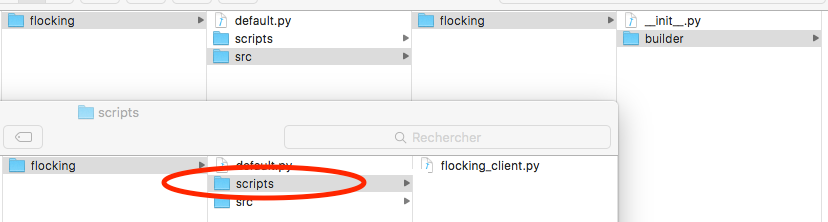Talking to morse
With Pymorse 3/5
Suppose you have a simulation running with a robot named "robot" and a position sensor named "pose" attached to it.
Then, from an external script, you can access its data with pymorse:
import pymorse
def callback(data):
print("I received this: "+str(data))
with pymorse.Morse() as simu:
simu.robot.pose.subscribe(callback)
simu.sleep(10)
Talking to morse
With Pymorse 4/5
Try it! Open two terminals and go at the root of the provided "morse-box" folder.
# First, source the configuration file
source pythonShell.sh
# Then import the simulation environment
morse import flocking
# Launch it
morse run flocking simple_pose.py
# In a second terminal, run the pymorse script
source pythonShell.sh
python flocking/scripts/simple_pose.py
Talking to morse
With Pymorse 5/5
Try it!
Take some time to read the flocking/simple_pose.py and flocking/scripts/test_simple_pose.py scripts.
Talking to morse
With MOOS 1/3
Morse provides mechanisms to interface your components with other middlewares. You just have to provide a custom serialization/deserialization script when instantiating your sensor/actuator.
flockingSensor=FlockingSensor()
flockingSensor.add_stream('moos','flocking.sensors.FlockingNotifier\
.FlockingNotifier',moos_port=9001)
Talking to morse
With MOOS 2/3
Structure of a MOOS serializer for the Flocking sensor in flocking/src/flocking/sensors/FlockingNotifier.py
import pymoos.MOOSCommClient
from morse.middleware.moos import AbstractMOOS
class FlockingNotifier(AbstractMOOS):
def default(self, ci='unused'):
cur_time=pymoos.MOOSCommClient.MOOSTime()
# Notify the MOOSDB of the robot state
state=self.data['state']
self.m.Notify("state",",".join(map(str,state)),cur_time)
# Go through all the states of the other robots measured
# by the sensor and serialize them in a big string
res=[]
for otherState in self.data['states']:
res.append(",".join(map(str,otherState)))
# Publish it in the MOOSDB
self.m.Notify("states", ",".join(res), cur_time)
Talking to morse
With MOOS 3/3
Now, the Flocking sensor of the robot will publish its data in a MOOSDB on the port 9001,
,
and therefore an external MOOS process will be able to listen.
Tasks
Setting the project up
You were given a folder containing a ready to use Python+MORSE installation, and a simulation environment named "flocking".- Always work from a terminal that sourced the "pythonShell.sh" script. To be sure it is the case, run "morse check".
- If you followed the previous instructions, you already imported the environment. Check it is the case: "morse import flocking".
- You are working with the default.py environment.
Tasks
Builder script
- Initialize 30 ATRV robots at random positions and orientations.Name them all "robot" (important)
- Attach a MotionVW actuator with the socket interface to them.
- Attach a FlockingSensor to each of them, with a socket interface. The update frequency will be set low, e.g.:2Hz. Why?
Tasks
Implement the Flocking sensor
This sensor gives the current state of the robot and all the states of all the other robots in the simulation.
- Open flocking/src/flocking/sensors/FlockingSensor.py.
- Implement what is missing. (Trap: the Blender Game Engine adds a shift of -Pi/2 on the Yaw angle in the worldOrientation method).
Tasks
Implement the Flocking behaviour
Using pymorse, implement a Flocking behaviour. [1]
You are given the script scripts/flocking.py to get you started
- Open scripts/flocking.py.
- Implement what is missing.
- Test the flocking behaviour.
- In a swarm, it seems that each individual is mostly influenced by its 7 closest neighbours [2]. Adapt the Flocking sensor accordingly.
Tasks
Interface the simulation with MOOS 1/2
We will run one MOOSDB per robot, each running on a separated port.
The script launchMOSSDBs.sh launches a given number N of MOOSDB on the ports [9001,...,9000+N], e.g.:
$ ./launchMOSSDB.sh 30 # Launches 30 MOOSDB on ports [9001,...,9030]
Tasks
Interface the simulation with MOOS 2/2
- The MotionVW already has a MOOS exporter. Configure it.
- Complete the MOOS notifier for the Flocking sensor in "src/flocking/sensors/FlockingNotifier.py" (solution is given above).
- Configure the Flocking sensors with the MOOS notifiers.
- Launch the MOOSDBs, the simulation, and check the variables are correctly published.
- Write a MOOS process that does the Flocking behaviour for one robot, and instantiate it N times to control the swarm instead of the pymorse script.